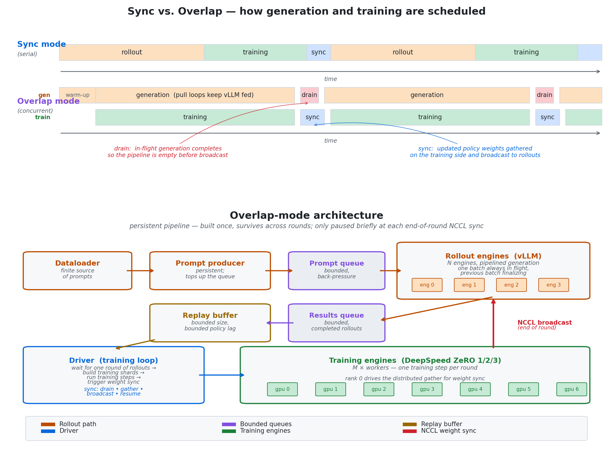

Reinforcement learning has always had a reputation for brittleness. That reputation is not accidental.
RL is a particularly general learning framework, but it is also intrinsically difficult: the learner must collect data by acting under a policy, optimize using rewards that are often imperfect or delayed, and repeatedly update the very policy that determines future data.
These difficulties become more pronounced in large models.
RL for LLMs and VLMs adds reward models or judges, expensive rollouts, distributed training, orchestration, synchronization, and other heavy systems concerns.
Better systems make large-scale RL feasible; they do not solve RL's core problems such as reward misspecification, sparse or delayed feedback, credit assignment, exploration, or stale policy-dependent data.
FeynRL is motivated by this gap. Its purpose is to make the systems required for realistic large-model training available while keeping the algorithmic layer as modular, legible, and separable as possible.

That separation of concerns is the central design principle. If someone wants to build a new RL algorithm, they should not need to work through a deeply entangled codebase spanning rollout workers, orchestration, data plumbing, and distributed execution just to change a loss or update rule.
Importantly, this does not mean FeynRL is a toy framework. It is designed to support realistic large-model post-training with the systems needed to run at scale, while remaining interpretable enough that researchers can understand what is happening and modify it without rewriting the whole stack.
a closer look at the architecture
Under the hood, FeynRL is organized along three axes that can be worked on independently: algorithms, rollouts, and orchestration. These layers communicate through narrow interfaces, so a new RL method is usually a new loss and update rule rather than a rewrite of the execution graph.
Where algorithms and systems interact most visibly is the training-rollout schedule. FeynRL supports two modes:
- Sync mode: each epoch generates all rollouts, trains on them, synchronizes the updated weights to the rollout engines, and repeats.
- Overlap mode: generation and training run concurrently on separate GPU pools.

The initial release benchmarks show the Qwen2.5-1.5B-Instruct run improving average pass@1 from 12.0% to 12.2% and pass@16 from 26.4% to 27.0%, while the Qwen3-4B-Thinking-2507 run moves from 12.2% to 27.0% at pass@1 and from 19.7% to 40.2% at pass@16.
The results set on the homepage will continue to expand as more runs are added.

qwen2.5-1.5b-instruct
| run | pass@1 | pass@16 |
|---|---|---|
| base | 12.0% | 26.4% |
| feynrl | 12.2% | 27.0% |

qwen3-4b-thinking-2507
| run | pass@1 | pass@16 |
|---|---|---|
| base | 12.2% | 19.7% |
| feynrl | 27.0% | 40.2% |